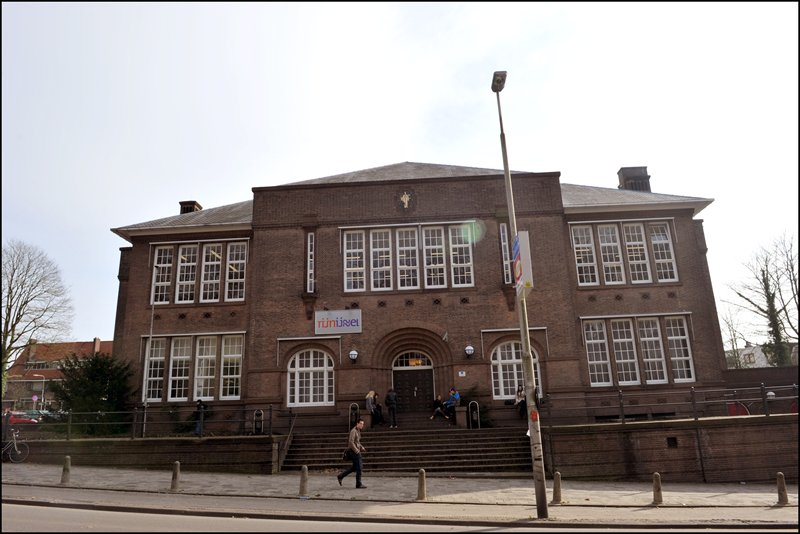

Austria
HÖNERE LEHRANSTALTEN FÜR TOURISMUS este una dintre școlile cele mai importante de turism din Austria, cu o lungă tradiție în schimburi și programe internaționale. Comunitatea noastră cuprinde aproximativ 700 de elevi și studenți cu vârste cuprinse între 14 și 50 de ani. Școala funcționează cu 3 programe diferite pentru a satisface nevoile elevilor, precum și industria. În calitate de partener în cadrul proiectului, înțelegem rolul nostru de factor contributiv la obiectivul comun, și anume de a dezvolta module de predare pentru o alimentație sănătoasă. Datorită faptului că vom coopera îndeaproape cu industria alimentară, suntem, de asemenea, în poziția de a implementa cele mai bune exemple din viața reală în cursurile noastre.
Italia
Școala ISTITUTO D´ISTRUZIONE SUPERIORE ¨AXEL MUNTHE¨ este un liceu public și are aproximativ 300 de elevi cu vârste cuprinse între 14 și 19 de ani. Institutul oferă trei cursuri de studiu de câte cinci ani fiecare: un curs de comerț (Istituto Commerciale), un curs de gestionare de hotel (Istituto Alberghiero), un liceu cu program normal(Liceo Classico).
Această şcoală este situată în regiunea Campania, care este regiunea cu cea mai mare prevalență a excesului de greutate și a obezității la copiii de vârstă școlară din Italia. Aceste date se referă în cea mai mare parte la copiii de sex masculin. Totuși, datele de la Ministerul Sănătății arată că mulți copii de ambele sexe şi de toate vârstele locuitori ai Campaniei petrec mai mult timp decât concetăţenii lor în fața calculatorului, PlayStationului sau televizorului. În plus, cu referire la practicarea de activitate fizică, oamenii tineri din această zonă sunt ușor sub media națională. Referindu-se la comportamente riscante, cum ar fi fumatul și consumul de alcool rezultatele indică o prevalență mult mai mică decât media națională pentru fumat și respectiv unul ușor mai mare pentru consumul de alcool. În cadrul acestui proiect școala noastră va acționa ca un referent coordonator.
Letonia

Școala KULDÏGAS TEHNOLOĞIJU UN TÜRISMA PROFESIONALA VIDUSSKOLA este bine cunoscută în partea de vest a Letoniei. Aici învață cursanți din toată partea de vest și chiar din partea centrală a Letoniei. Școala a fost înființată în 1989 şi este o școală de stat a Ministerului Educației și Științei din Letonia. Are aproximativ 600 de cursanți (cu vârste cuprinse între 15 și 25 de ani), 23 de grupuri (aproximativ 18-30 de cursanți din fiecare grup) și 50 de profesori ai școlii. Școala funcționează cu un curriculum de 4 ani, de 1 an și de 1,5 ani. Elevii cu studii elementare complete pot dobândi curriculum în patru ani - mecanic auto, constructor mobilier tâmplărie, coordonator turism Commerce sau de catering și servicii de restaurant. Elevii surdo-muți, cu studii elementare complete pot dobândi diplomă de dulgher.
Persoanele cu studii medii complete pot deveni mecanici auto în 1,5 ani. Din 1996 școala a fost implicată în mai multe proiecte europene în programe diferite: Leonardo da Vinci, Socrates, Lingua, Arion, Grundtvig, ERAF, FSE, Phare, Tineri pentru Europa. Școala are parteneriate cu școli și companii din Germania, Suedia, Italia, Polonia, Estonia, Lituania, Rusia, Slovacia, Austria, Bulgaria.
Olanda
RIJN IJSSEL VAKSCHOOL WAGENINGEN este un centru dinamic pentru Educație și Formare Profesională (EFP) în Arnhem, în partea de est a Olandei. Colegiul nostru își propune să fie bine informat cu privire la inovațiile din domeniile profesionale în care lucrăm și se adresează organizațiilor regionale și companiilor pentru a coopera. Împreună cu aceste părți interesate noi avem ca scop îmbunătățirea calității formării profesionale pentru studenții noștri. În total, 13.000 de elevi urmează o formare profesională și sunt 1100 de cadre didactice implicate. Cu toate acestea, departamentul de programare, de formare pentru domeniul hotelier și catering, Vakschool Wageningen, afirmă că programele lor de Hospitality Food, sunt internațional orientate, care implică faptul că cel puțin 45% din acești studenți merg în străinătate pentru studiu. În cadrul acestei ambiții, Vakschool Wageningen are ca obiectiv învățarea metodelor inovatoare de organizare a uceniciei în străinătate și extinderii rețelei lor de școli de înaltă calitate, în scopul de a stabili schimburi reciproce.

România
Colegiul Național “Aurel Vlaicu” a fost fondat în 1919 și a fost numit după inginerul Aurel Vlaicu, un pioner al aviației române. Școala noastră este cea mai mare din zona Orăștiei. Școala noastră are aproximativ 700 de elevi cu vârste între 11 și 19 ani și un grup de 40 de profesori.
Școala noastră oferă următoarele specializări:
Matematică și informatică (intensive Engleză) funcționează cu curriculum de 4 ani.
Științele naturii (intensiv Engleză) funcționează cu un curriculum de 4 ani.
Filologia funcționează cu un curriculum de 4 ani.
Științele sociale funcționează cu un curriculum de 4 ani.
Toți elevii noștri studiază limba engleză, mulți dintre ei vorbesc fluent engleză, iar alții vorbesc fluent italiană. Doi dintre profesorii noștri vorbesc italiana și cinci engleza. Mulți dintre elevii noștri intenționează după absolvire să urmeze universitatea de medicină, ei sunt cei mai interesați de astfel de proiecte.
Suntem conștienți de faptul că mâncarea și obiceiurile alimentare sănătoase sunt importante pentru bunăstarea elevilor noștri. Am fost implicați într-o serie de activități extrașcolare locale și naționale pentru o viață mai sănătoasă.